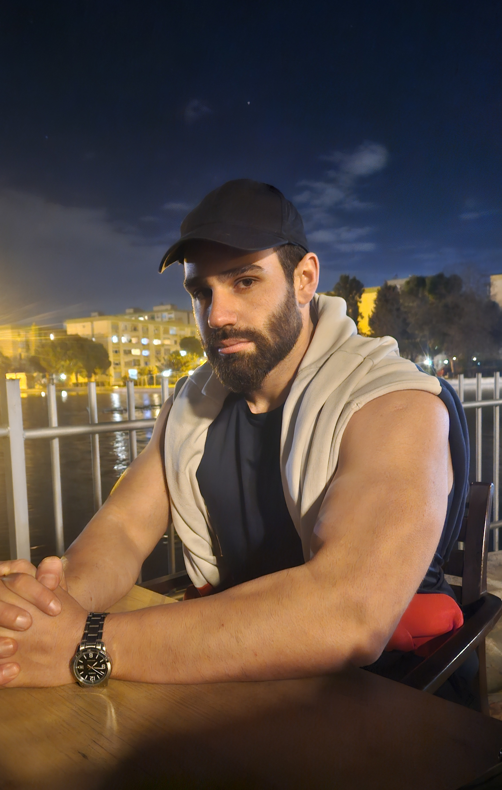

Web sitemize hoş geldiniz. Size en iyi hizmeti sunmak için buradayız.
Hakkımda

Fotoğraftaki değişim, benim hikayemin sadece bir parçası. Sağlıklı ve bilinçli yaşamak benim için de bitmeyen bir yolculuk; çünkü bu bir sprint değil, ömür boyu süren bir maraton. Bu yüzden o çaresizlik hissini, nereden başlayacağını bilememeyi çok iyi anlıyorum. Ama doğru adımlarla ve kararlılıkla her şeyin mümkün olduğunu bizzat deneyimledim. Şimdi 4 yıllık koçluk tecrübemle, benim geçtiğim yollardan geçmek isteyenlere rehberlik ediyorum. Çünkü biliyorum ki, o ilk adımı atmak en zoru ama sonrası inanılmaz! Karmaşık planlar veya imkansız hedefler yok. Sadece sana özel, sürdürülebilir ve keyif alacağın bir yolculuk var. Sağlıklı yaşamın aslında ne kadar basit ve ulaşılabilir olduğunu birlikte keşfedelim mi? Kendine bir şans ver. O ilk adımı atman için ihtiyacın olan tüm desteği bende bulacaksın.
Neden online koçluk

Evet, kabul edelim: İnternet bilgiyle dolu ve harika sonuçlar almak için illa bir koça ihtiyacınız olmayabilir. Hatta başlangıç için size yol gösterecek ücretsiz rehberlerimi de sunuyorum. Peki, tüm bu kaynaklar varken neden benimle, online koçlukla çalışmayı seçmelisiniz? Çünkü benim sunduğum şey, standart bir fitness programından çok daha fazlası. Benim odak noktam sadece vücudunuzu değil, zihninizi de dönüştürmek. Bu yolculukta size hem fiziksel gücünüzü artırmanızda hem de zihinsel ve duygusal dayanıklılığınızı geliştirmenizde rehberlik ediyorum. Motivasyonunuz düştüğünde sizi neyin tetiklediğini anlamanıza, duygularınızı yönetmenize ve hayatınızın kontrolünü elinize almanıza yardımcı oluyorum. Tek başına yol almak mümkün, ama inişleri ve çıkışları var. Ben bu yolu yalnız yürüdüm; maddi zorluklar içinde, ne yapacağımı bilemediğim anlarda keşke bana sadece ne yapacağımı değil, nasıl hissettiğimi de anlayan bir rehber eşlik etseydi diye çok düşündüm. İşte şimdi, o gün hayalini kurduğum desteği ve birikimi size sunuyorum. Amacım size özel, sürdürülebilir bir planla, gereksiz deneme yanılmalarla vakit kaybetmeden hedeflerinize ulaşmanızı sağlamak. Eğer sadece bir program değil, bu dönüşüm yolculuğunda size omuz verecek bir yol arkadaşı arıyorsanız ve bu konuda gerçekten kararlıysanız, sunduğum birebir desteğe kıyasla ne kadar ulaşılabilir bir yatırım yaptığınızı göreceksiniz. Değişime hazırsanız, ilk adımı atın ve bana bir "merhaba" deyin. Gerisini birlikte konuşur, size en uygun yolu birlikte planlarız.
Fitness Hesaplayıcıları
Aşağıdaki araçları kullanarak vücut ölçülerinizi ve günlük kalori ihtiyacınızı hesaplayabilirsiniz.